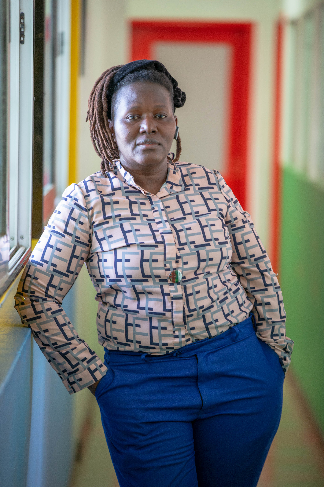

Welcome to My World
I am Florence Nyaoke, a womanist leader, writer, and advocate passionate about justice, equity, and inclusive community building. Through leadership initiatives, campaigns, and writing, I create spaces for healing, empowerment, and solidarity across Africa and the global community.
Explore my projects, reflections, and journey — and let us connect to build a future rooted in dignity and wholeness.